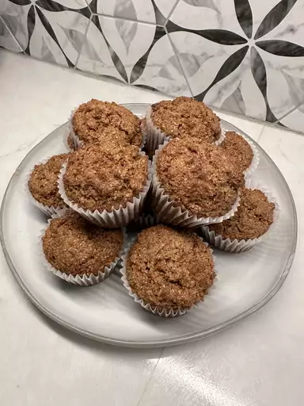

Muffins

Description
Bran muffins are a high-fiber easy to make dessert.
Ingredients
- Wheat Bran
- Buttermilk
- Brown Sugar
- Vegetable Oil
- Egg
- Vanilla
- Flour
- Leaveners
- Salt
- Raisins
Steps
- Mix the wheat bran and buttermilk. Let the mixture stand.
- Beat the remaining wet ingredients together, then stir them into the buttermilk mixture.
- Add the dry ingredients. Fold in the raisins.
- Spoon the batter into a prepared muffin tin.
- Bake in the preheated oven until the tops spring back when lightly touched.